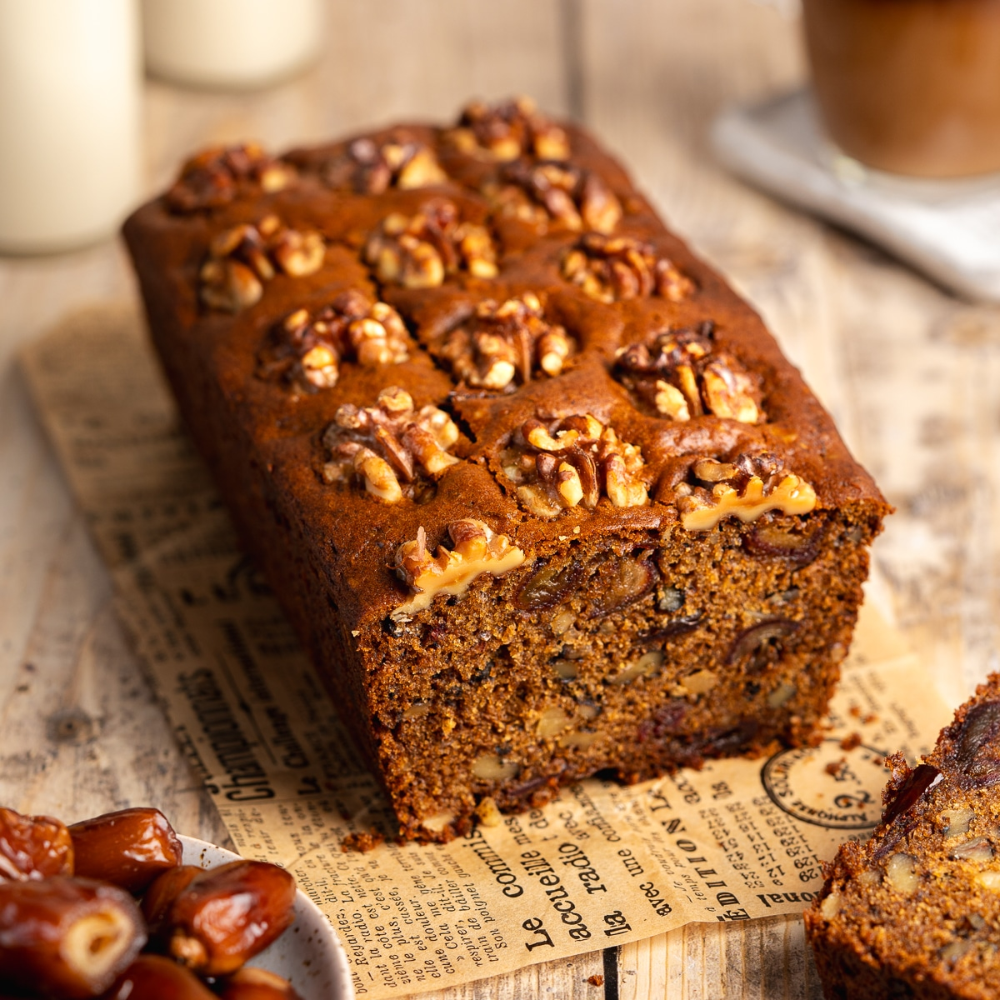

Date Cake

Description
Date cake Is a moist and flavorful dessert that is perfect for any occasion. 1 The cake is made with dates,
which give it a rich, caramel-like flavor. 1 It is often topped with a creamy frosting or a dusting of powdered sugar. 2 Date cake
can be served as a snack, dessert, or even as a light breakfast. 3
Ingredients
To make Date cake you need :
- Dates (duuuh)
- Walnuts (They go very well with dates)
- Butter
- Yogurt
- Baking powder
- Baking Soda
- A tiny bit of salt
- Flour
- geranium water
Step by step Instructions
-
Make the Date paste:
Place the pitted dates in a bowl. Pour the boiling water over them and add the baking soda.
Stir well and let it sit for at least 30 minutes, or up to a few hours,
to soften the dates. The mixture will become a thick paste. You can blend it with an immersion
blender or food processor for a smoother texture if desired.
-
Preheat and Prep:
Preheat your oven to 350°F (175°C). Grease and flour
a 9x13 inch baking pan (or a round 9-inch cake pan). You can also
line the pan with parchment paper for easier removal.
-
Cream Butter and Sugar
In a large bowl, cream together the softened butter (or oil) and granulated sugar until light and fluffy.
Beat in the molasses and vanilla extract.
-
Combine Dry Ingredients:
In a separate bowl, whisk together the flour, baking powder, and salt.
-
Combine Wet and Dry:
Gradually add the dry ingredients to the wet ingredients, mixing until just
combined. Do not overmix.
-
Add Date Paste and Walnuts:
Add the date paste to the batter and mix until evenly distributed. Stir in the chopped walnuts.
-
Bake:
Pour the batter into the prepared pan and spread evenly. Bake for 30-35 minutes, or until a toothpick
inserted into the center comes out clean.
-
Cool:
Let the cake cool in the pan for 10 minutes before transferring it to a wire rack to cool completely.
-
Serve
This cake is delicious on its own, or you can dust it with powdered sugar or top it with a simple glaze or frosting.